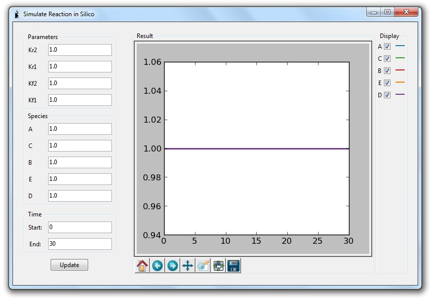
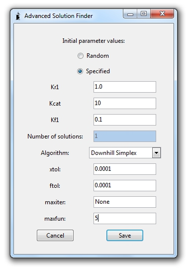

This tutorial aims to introduce Beaker as a tool for finding the rate constants of chemical reactions. It covers creating Beaker projects, defining reaction models, importing data and finding solutions. Throughout this tutorial, instructions that require the user to do something are highlighted in bold.
The first step is to create a new project file for Beaker to work with. To do this go to File > New Project.
This will open up the "New Project" dialog box.
The "New Project" dialog box contains three options. The first is the project name, you should enter something meaningful here to make it easy to find the project again the next time you run Beaker. In this case, enter "Tutorial".
The second option is the project units. Every time you enter some data into Beaker, the units you use must have the same order of magnitude (e.g. mM for concentrations or mM / s for rates). When you come to finding values for your microscopic rate constants, these values will be returned with the same units that you used for entering data. In this case, select "mM".
Finally you must select a project directory, which will be used to store your project files. By default Beaker uses My Documents/Beaker on Windows. You can leave this setting as it is, unless you wish to store your Beaker files somewhere else.
Now click Save to continue.
Once you have created your project, the project panel will become available. The project panel will display information about the current Beaker project, including the name, units and project directory. It will also display more information as you continue to add more data to the Beaker project.
The project settings you have just defined can be modified easily from the File > Edit Project menu option. Projects can also be opened, saved and closed from the File menu.
Beaker offers a number of different methods for defining a reaction model.
From the top menu bar select Model > Pick Model > Competing Reactions. This will load a pre-defined model definition into the current Beaker project.
Now that you have defined a reaction model, the Model panel will become available to select, next to the Project panel. Select the Model panel, and you will see some information about the reaction model you just loaded.
The first line of the Model panel gives a brief summary of your model. In this case, the model contains two reactions and those reactions contain a total of 4 reactants (in this case A, B, C and D).
After the summary line, details are printed for each reaction. Substrates are given on the left and products on the right. The microscopic rate constant for the forward reaction is given above the equilibrium arrow, whilst the reverse rate constant is given below. In this case, our model definition does not explicitly include these constants, so Beaker has named them Kf and Kr, followed by the number of the reaction to which they belong.
2.3 Editing a reaction model
From the menu bar, select Model > View/Edit Model to bring up the model editing dialog box.
Beaker models are defined in plain text, and this text can be displayed or edited in the model editing dialog box. There are a few simple rules for defining Beaker reaction models:
So in this example, two A reactants react with one B reactant to form C, and one A reactant reacts with one C reactant to form one D reactant.
Suppose we want to change the model so that the second reaction produces an additional product, E. Simply change the second reaction to read 'A + C <-> D + E', then click Save.
Once this is done, you should see that the Model panel has been updated to reflect the new product.
At this point, we might want to check the reaction model we have defined to ensure it behaves as we expect. Select Model > Run Simulation from the menu bar.

The simulate reaction dialog box allows you to see how the reaction you have defined would behave under a certain set of conditions. By default, Beaker selects a value of 1.0 for all of the rate constants, and for the initial concentrations of each reactant. Under these conditions, the reaction model we have defined lies at equilibrium, so all we see is a flat line. Say we are interested in the behaviour of the system when equal parts of A and B are added together in the absence of the other reactants. Change the initial concentrations of C, D and E to 0.0, then click Update.
Now we can see how the concentrations of our five reactants change over time. Each reactant is displayed in a different colour, with a key to the colours displayed on the right. We see that the concentrations of A and B (blue and red respectively) decrease over time, whilst C and D increase. Whilst the key indicates that reactant E should be visible in orange, it cannot be seen in this display. Click the checkbox next to D in the display key to turn off the display of reactant D. This reveals that reactant E is produced at exactly the same rate as D and was therefore hidden when D was displayed.
Our simulation shows that the reaction would reach equilibrium after about 5 seconds. Supposing we were interested only in the pre-equilibrium behaviour, we can ask Beaker to only simulate the first 5 seconds of the reaction. Change the end time from 30 to 5 seconds in the bottom left entry box, then click Update.
What if we want to define the name or value of one of the microscopic rate constants ourselves? This is easily accomplished. From the top menu select Model > Pick Model > Michaelis Menten and examine the reaction model we have loaded in the model pane. Whilst the first reaction has the default rate constants (Kf1 and Kr1) the second reaction has had its forward rate constant renamed Kcat, and its reverse rate constant set to 0. To see how this has been accomplished, select Model > View/Edit Model from the top menu.
The first line of the model we have loaded is a comment, and the second and third are reaction definitions of the sort we met previously. The fourth line is a rate constant definition. The rules for rate constant definitions are as follows:
In this case both forward and reverse rate constants are defined for the second reaction.
Usually when we use Beaker we want to find values for the microscopic rate constants of a real reaction. In order to do this, we must import some data from a real reaction into Beaker.
Beaker accepts data in a tab delimited format. The files we will be using are named 'tutorial concentration data.txt' and 'tutorial rate data.txt', which you should be able to find in the 'Tutorial' directory of your Beaker install directory.
Open the'tutorial concentration data.txt' file in a text editor. This file is a list of concentration measurements, taken at a series of times. You will see that the file has a simple structure, with the first line containing a list of headings seperated by tabs, and the following lines containing the data (and also seperated by tabs). Note that the headings in this file are T, S and P.
From the top menu, select Data > Import Concentration Data. Now find the 'tutorial concentration data.txt' file again and click Open. You will see the import concentration data dialog box, shown below.
This dialog box shows the column heading and the first four rows of data for the three columns in our 'tutorial concentration data.txt' file. What we need to do know is let Beaker know which columns correspond to which reactants as defined by our model. We also need to tell Beaker the time at which each of these concentration measurements was taken. Assign the 'P' column to Product by selecting Product from the dropdown box over the P column. Now assign the 'S' column to Substrate and the 'T' column to Time.
Click Continue. You will now see the assign starting concentrations dialog box.
In this experiment, we measured the concentration of Product and Substrate at time 0. However, since we did not measure the concentration of Enzyme or of ES-complex, Beaker now needs to know what the concentrations of these species were at time 0. Set the concentration of Enzyme to 1.0, but leave the concentration of ES-Complex at 0.0. Click Save.
Beaker works best when we can supply concentration measurements taken over a range of times. However, Beaker can also accept measurements of the initial rate of change of a reactant made over a series of concentrations. Data of this sort is contained in the file 'tutorial rate data.txt', which we will import now.
From the top menu, select Data > Import Rate Data. Now locate and select the 'tutorial rate data.txt' file. You will now see the import rate data dialog box.
The import rate data dialog box is identical to the import concentration data dialog box, except that when you assign a column to a reactant defined in the model, you must also specify whether the column represents measured rates of change for that reactant, or initial concentrations of that reactant. In this case the rate of change of Substrate and Product were measured over a range of Substrate concentrations. Assign the S_Conc column to Substrate Concentration, the S_Rate column to Substrate Rate and the P_Rate column to Product Rate. Click Continue.
As before, we are shown the assign starting concentrations dialog box. Set the Enzyme concentration to 1.0 again and leave the ES-Complex and Product concentrations at 0.0.
Now that we have imported some data, the Data panel has become available. Click on the Data panel.
The data panel shows a list of experiments on the left, and the details of the data entered for each experiment on the right. Experiment 1 contains all of the data from 'tutorial concentration data.txt'. At the top of the panel the starting concentrations of each reactant are listed, and underneath there is a table containing all of the concentration measurements and times imported from the text file. Now select Experiment 2 from the list on the left of the panel.
Experiments 2 through 12 each display information from one single line of 'tutorial rate data.txt'. In the case of rate data, each line is a different experiment because each line represents data taken from a different set of starting concentrations. For rate data, the starting concentrations are displayed on the left, and the measured rates of change for each reactant are displayed on the right.
The final stage of the process is for Beaker to find the set of rate constants which allow the defined reaction model to most closely match the imported data - this is known as the 'solution' of the model.
To find a solution quickly, from the top menu select Solutions > Quick Solution. This will bring up the solving dialog box.
The solving dialog box gives you an estimate of the progress Beaker has made towards finding a solution. Once a solution has been found, this dialog box disappears and is replaced by the soultion found dialog.
The solution found dialog box lists the rate constant values that Beaker thinks most closely fit the provided data. Click OK to dismiss the solution found dialog box.
Beaker returns the best solution it can find using the data provided by the user. This does not necessarily mean that the solution is a good one. In order to confirm that the set of rate constants gives a good fit to the data provided, we need to examine the solution. Click on the Solutions panel.
The solutions panel contains all the information about every solution Beaker has found for this project. In the leftmost column there is a list of all the solutions found. Since we have only found one solution, we have only one entry available. The next column contains the details of the solution.
For each of the rate constants, Beaker lists the initial guess and the final value. Beaker finds solutions by refining an initial guess, and when you perform a Quick Solution, the initial guess defaults to a value of 1.0 for every constant. The final values are the same as those listed by the solution found dialog box that we encountered earlier.
Below the rate constant values are three parameters relating to the quality of the solution. The first is the Squared Difference, which is a measurement of the difference between the provided data and the predictions of the model using this solution. Because it is a measure of difference, lower values mean a better solution.
Solver Iterations and Function Calls are both measures of how much work Beaker had to do to reach the current solution. This can depend on a number of things, including the initial guess used and the complexity of the model.
Finally, in the right hand column is a section that allows us to compare the model predictions to the imported data directly. The drop down list at the top allows us to pick an experiment to compare with the solution.
Experiment 1 should be selected, which contains all of the data from 'tutorial concentration data.txt'. This data is displayed as two different coloured sets of circles, representing the two reactants whose concentrations we measured. The predictions of the model (based on this solution) are shown as lines, the same colour as the circles. In this case, you can see that the line (solution) follows the circles (data) extremely well - so we can be confident that the solution is a good one for this data set.
Now select experiment 2.
This experiment is one of the twelve imported from 'tutorial rate data.txt'. As with experiment 1, you can see the predictions of the model based on the solution displayed as a solid coloured line. This experiment contains two measurements - the rate of change of Product and the rate of change of Substrate at 1 second following reaction start. Each rate is displayed as a black line, centred at the point on the prediction where the measurement was taken (indicated as before by a coloured circle). For our solution to be a good fit to the experimental data for this experiment, we want the black line to be tangent to the coloured line. In both cases, the measured rates are very good tangents to the model predictions, so our solution looks to hold for this experiment too. You can check the other experiments yourself, they should all be good fits to the imported data.
In order to distinguish good solutions from bad ones, it helps to have some experience of what a bad solution might look like. We can force Beaker to find a bad solution by using the advanced solution finder panel. From the top menu bar select Solutions > Advanced Solution.

This is the advanced solution finder dialog box, which enables you fine grained control over all of the settings for solution finding. The top part of the dialog box deals with the initial values Beaker will try and refine until it finds a solution. In this case, since we are forcing beaker to find a poor solution, we will enter some parameter values which are far away from the true solution. Click on the radiobutton labelled specified. This tells Beaker that we are going to provide our own estimates for the parameter values. Leave Kr1 as it is, but change Kcat to 10 and Kf1 to 0.1.
The next section deals with the algorithm Beaker will use to find a solution, and the options for that particular algorithm. All of the algorithms are provided by the scientific python library SciPy, and details for how these parameters affect the algorithm output can be found in their documentation (http://docs.scipy.org/doc/scipy-0.7.x/reference/optimize.html). For now, it will be sufficient to change the parameter maxfun to 5, then click Save.
Accept the values given by the solution found dialog, then go to the Solutions panel and select solution 2. You should now see the comparison of the solution we just found with the imported concentration data in experiment 1.
As you can see, this solution does not really match the imported concentration data at all. If you click on one of the other experiments, you will see that the same is true for the rate data (except for experiment 6, where the initial concentration of Substrate was 0, so the model behaves the same for any set of parameters, i.e. it does nothing at all!).
We have already explained that Beaker requires an initial guess to find a solution. This means that if there is more than one solution, the values returned by Beaker will be heavily dependent on the initial guess. In order to be more confident that the solution we found in section 4.2 is the solution and not simply one of many possible solutions, we would want Beaker to find a number of solutions using random starting points. We can do this using the advanced solutions dialog. From the top menu bar, select Solutions > Advanced Solution.
This time, instead of specifying an initial guess, we leave random selected for the initial parameter values, and change Number of solutions to 2. Leave all of the other parameters at their default values and click Save.
Once Beaker has found two more random solutions, examine the values of the rate constants using the solutions panel. You should see that Kcat and Kf1 are identical (or very similar) in every solution. However, Kr1 is different in each solution.
What we have discovered is that for the model we have defined, the value of Kr1 has no effect on the behaviour of the system. This is why it is important to test multiple randomly generated solutions before drawing conclusions about the values of any rate constants.
That concludes this tutorial, thank you and good luck with using Beaker!
If you encounter any problems or bugs, please don't hesitate to email the author at rob@beagrie.com.